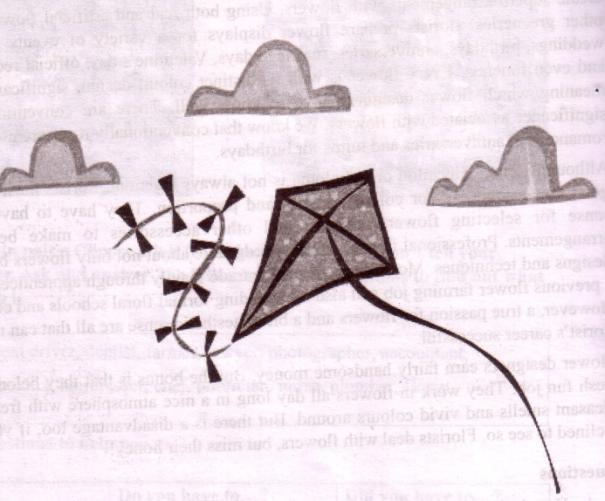
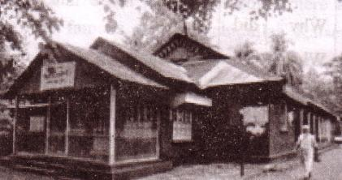
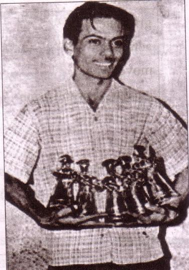

Unit Ten
Dreams

Learning outcomes
After we have studied the unit, we will able to
-
listen for specific information.
-
participate in conversations and discussions.
-
understand and narrate problems.
-
take and give interviews.
-
Complete a grid.
Lesson 1: I have a dream
A . Read these texts and say what is common in them.
|
Hi, I'm Moitry Mutsuddi. My father is a freedom fighter and my mum is a teacher. They both dream for a golden Bangladesh and inspire me to do something significant, something positive for the country. Often I think what to do to fulfil their expectations in future. Finally I've decided to be a politician and work for my motherland. How is it? |
Hello! I'm Mofakkhar Hasan. I live in a slum with my parents and sisters. I know how cruel poverty can be! My heart bleeds to see the poor, suffering people in my slum. After I have finished my education, I'll be a social worker to fight against social Injustice and poverty. Change is the word I believe in to make Bangladesh a golden Bengal.' |
|
I'm Amitabho Kar. When I say to my friends that I would like to be a space traveler, they laugh. But I really want to be that. If people from other countries can win the moon, and roam in the space, why not we? To be honest, I visualize that I'm stepping on the Mars from a space shuttle. Please wish for me so that my dream comes true. |
My name is Ruth Antara Chowdhury. I believe that a society cannot be enlightened Without proper education. Education lights the candle in people's heart. So I will be a teacher. Most of the times, people laugh at me and tell, 'You are a brilliant student. Why not be a doctor or an engineer?' I tell them, 'I want to be a teacher as I'm brilliant' |
B . Read the texts again and then work in pairs. Which person do you think is most like you and why? Make a similar text stating your own dream.
C . Read this interview between Swati, a successful student in JSC and a newspaper reporter, Animesh Roy. The interview is jumbled up. Read the text and then organize the conversation properly.
122Animesh : So you mean learning from each other?
Swati : There is no magic behind. I just worked hard. I followed our
teachers' advice, ‘The more you read, the more you learn'. I'm grateful to my teachers and parents for guiding me properly.
Animesh : Well Swati, we are really so proud of you for your brilliant
performance in the JSC exams. Please tell us how you could achieve this success.
Swati : Ohh.... and I'm grateful to my school and friends too.
Animesh : That's great!
Swati : In my school, we had a nice study group. Whenever we had any
problem, we discussed that in our group first. We tried to help each other. And it worked a lot. Never forget, two heads are better than one.
Animesh : I understand why you are grateful to your school but would you explain how you are grateful to your friends, please?
Swati : Exactly that!
Animesh : By the way, Swati, what are your future dreams?
Swati : To keep up the success in next exams and make my dreams come
true. I want to be a scientist. Since my childhood I've known that many people in Bangladesh are under arsenic threat. They are taking arsenic directly from their drinking water and indirectly from the crops and vegetables they eat. It's a kind of slow poisoning. People are helpless. They are suffering from many kinds of diseases. Therefore, I have a dream to carry out a research on how to get rid of this problem, using our own recourses and expertise.
Animesh : Wish you luck.
D. Now listen to the CD/teacher and check whether your answer is correct.
|
Listening text 8 |
E Work in pairs. Make questions for your partner to know about his/her dreams and take his/her interview.
Lesson 2: What I dream to be
-
A. Work in groups. Read the following words. How are they related to dreams?
|
imagination |
emotion |
passion |
obsessions |
strong |
desire |
|
colour |
rosy |
future |
mind |
brain |
plan |
B . Work in groups, and discuss the following questions:
1. Do you consider dreams important for life? Why/ Why not?
2. What do you dream at this moment as a student?
3. What, according to you is the dream of Bangladesh at present?
4. Give examples of some dreams that were commonly shared by Bangladesh as a nation.
5. Do you think the world has any common dream? What is that?
C . Listen to the CD/teacher. Three people are telling about their dreams. Take notes in the following grid to show what they plan to do and what they don't want to do.
|
Listening text 9 |
|
- |
plans to |
doesn't want to |
|
1. Catherine Aich |
- |
- |
|
2. Masum Billah |
- |
- |
|
3. Nirmal Drong |
- |
- |
D . Listen to the texts again and check (√/X) the statements.
1. Masum Billah desires to study agriculture as his teacher suggests him to do that.
2. If Masum qualifies, he will take admission to a university in his rural area.
3. Catherine's mum died in a doctor's hand.
4. If Catherine's family had brought a trained nurse, her mother might have survived.
5. If Najmun Sultana came a few months ago, Nirmal could take admission to a foreign University.
6. If Nirmal's dreams come true, his near and dear ones will be more conscious about their rights.
124-
D. Now make sentences from the following substitution table.
| If Masum If Catherine If Nirmal If Najmun Sultana | becomes a nurse deserves any merit has opportunities called a trained medical person came to Nirmal's class a few days ago | he will be a leader in the field of education. she will serve her community. she could save her mum's life. he will be a farmer's friend. they could learn more |
F . Work in pairs and make sentences reflecting your own life using if clauses as in the table above.
G . Write a composition about some event in your life that has inspired you to have a dream. Then briefly describe the dream. Make predictions and possibilities.
Lesson 3: They had dreams 1
A . Shanta was chatting with one of her foreign friends Jenny. Read the dialogue and tell what the subject matter is in their conversation.
Jenny : Shanta, what's your dream for future?
Shanta : To be a good human being at first and then work for my country.
No matter whether I become a social worker, or an artist, or a professional.
Jenny : Wow! I really appreciate your ideas! By the way, Shanta, does
anyone inspire you in your dreams?
Shanta : Definitely yes. I'm always influenced by the great personalities in
our country and abroad. Whenever I read any great people's biography, I try to understand how their dreams could help them to be what they have been.
Jenny : Would you please tell me about some of your favourite dreamers?
Shanta : Sure! Read the following texts to know about some dreamers in
my country. They are my icons as well.
B . Read the text.
Pritilata was born in Chittagong on 5 May 1911. She was a meritorious student at Dr Khastagir Government Girls' School in Chittagong and Eden College, Dhaka. She finally graduated in philosophy with distinction from Bathune College in Kolkata. In her college days, Pritilata was an activist in the anti-British movement. All through her life, she dreamt of two things: a society without gender discrimination, and her motherland without British colonial rule.
125So she received combat training to fight against the British rule. Soon after, Pritilata became the head teacher of Nandankanon Aparna Charan School in Chittagong. Gradually she involved herself in Surja Sen's armed resistance movement. Surja Sen was a famous anti-British movement organizer and activist in Chittagong area that time. In 1932, Surja Sen planned an attack on the Pahartali European Club. The club was well-known for its notorious sign Dogs and Indians not allowed. Surya Sen assigned Pritilata to lead a team of 10-12 men to attack the Club. The raid was successful but Pritilata dressed as a man failed to get out of the Club.
She committed suicide by taking potassium cyanide to avoid arrest. She proved that women can work like men. She also proved that women too needed to be prepared to sacrifice their lives for the freedom from the British colonial rule. Her dream came true. The British rule came to an end though she couldn't Pahartali European Club see it during her lifetime.

C . Read the words in Column A and match them with the meanings in Column B.
|
Column A |
Column B |
| Graduated activist movement gender discrimination colonial rule combat gradually resistance notorious assign | a member of a certain social or political group fight took a university degree rule by another country battle difference between male and female slowly give responsibilities activities dishonorable |
D . Now answer the questions.
1. Where did Pritilata fight?
2 . When did she fight?
3 . Why did she fight?
4 . What was Pritilata's profession?
5. What is your learning from Pritilata's life?
E . Now make questions from the substitution table and match the answers.
| When Where What Why What Who How | Was did | she graduate in? Pritilata born? assigned Pritilata to attack the club? Pritilata die? the Pahartali European club famous for? she take armed training? she born? | On 5 May 1911. In Chittagong. Philosophy. To fight against the British rule. For its notorious sign -Dogs and Indians not allowed. Surja sen. She committed suicide by taking potassium cyanide |
Lesson 4: They had dreams 2
-
A. Look at the picture. He is a great son of our country. Who is he? What do you know about him?
B . Read the text.
Zahir Raihan was one of the most talented film makers in Bangladesh. He was born on 19 August 1935 in the village Majupur, in Feni district. He was an active worker of the Language Movement. He was one of the ten students to go out in a procession on 21 February 1952 despite a ban on such activities. As a result, he and many others were arrested and taken to prison. Zahir was also present at the historical meeting of Amtala on February 21, 1952. He also took part in the mass movement in 1969. In 1971, he joined the Liberation War.

All through his life, Zahir dreamt for a democratic society, a society that will ensure freedom of speech and will. He had many dreams about our film industry too. He made a legendary film Jibon Theke Neya based on the Language Movement of 1952. It was a revolt against the then autocratic government. The family presented in that film was a miniature East Pakistan ruled by an autocrat who had to go to the prison for her conspiracy. During the liberation war this film was shown outside Bangladesh. Critics like Satyajit Ray, Mrinal Sen, and Ritwik Ghatak appreciated this film. Zahir gave all his money to the Freedom Fighters' trust that he got from his film shows. Besides, his great documentary on Pakistani atrocities, Stop Genocide, helped create world sentiment in favour of our liberation war.
On 30 December 1971, someone informed Zahir about an address somewhere at Mirpur, where he might find his brother, the famous writer Shahidullah Kaiser. Shahidulla was captured and killed by the Pakistani army and the local collaborators during the last days of the war. Accordingly, Zahir left home to get his brother back and he never returned. Zahir's dream was fulfilled. He could see the inception of a free independent Bangladesh though he did not get back his brother. And it's a pity that this dreamer was missing at such a time when his dream came true.
C . Use appropriate information from the text above to complete the grid.
|
Zahir Raihan | |||||
|
participated in |
famous as | best document ary |
movie based on language movement | Missing since |
his dream |
|
- |
- |
- |
- |
- |
- |
D . Read the following sentences and complete them.
1. Zahir Raihan is famous as [dash]
2. Zahir was imprisoned because [dash]
3. He participated in [dash] and [dash]
4. Jibon Theke Neya symbolizes[dash] .
5. He donated [dash]
6. He worked to organize [dash] by his great documentary Stop Genocide.
7. His disappearance is a great[dash] .
E . Work in pairs. Discuss.
1. Why is Zahir Raihan considered a freedom fighter though he was a film maker?
2. How does the title of the lesson fit to the story of Zahir Raihan?
F . Project. Work in groups. Meet a freedom fighte r in your locality. Interview him/her. Then write a paragraph on him/her.
129